¿Cómo debo fijar el precio del seguro de auto en los Estados Unidos?
Introducción
Contexto del Negocio. La capacidad de fijar el precio de una cotización de seguro correctamente tiene un impacto significativo en las decisiones de gestión y los estados financieros de las aseguradoras. Usted es el científico de datos en jefe de una nueva compañía de seguros que se enfoca en brindar seguros asequibles a los millennials. Tiene la tarea de evaluar el estado actual de las compañías de seguros para ver qué factores cobran primas los grandes proveedores de seguros. Afortunadamente para usted, su empresa ha compilado un conjunto de datos encuestando lo que la gente paga actualmente por los seguros de las grandes empresas. Sus hallazgos se utilizarán como base para desarrollar la oferta de seguros de automóviles millenial de su empresa.
Problema de Negocio. Su tarea es construir un modelo mínimo para predecir el costo del seguro a partir del conjunto de datos usando varias características de un asegurado.
Contexto Analítico. Los datos residen en un archivo CSV que se ha limpiado previamente para usted y se puede leer directamente. A lo largo del caso, estará iterando en su modelo inicial muchas veces en función de las dificultades comunes que surgen y que discutimos en casos anteriores. Utilizará el paquete statsmodels de Python para crear y analizar estos modelos lineales.
### Load relevant packages
import pandas as pd
import numpy as np
import matplotlib.pyplot as plt
import seaborn as sns
from multiple_linear_regression import MultipleLinearRegression
import os
import matplotlib.pyplot as plt
import seaborn as sns
import ipywidgets
# This statement allow to display plot without asking to
%matplotlib inline
# always make it pretty
plt.style.use('ggplot')
---------------------------------------------------------------------------
ModuleNotFoundError Traceback (most recent call last)
Cell In[1], line 3
1 ### Load relevant packages
----> 3 import pandas as pd
4 import numpy as np
5 import matplotlib.pyplot as plt
ModuleNotFoundError: No module named 'pandas'
Explorando los datos
En primer lugar, cargamos la información disponible para el análisis de la información.
Las siguientes son las columnas en el conjunto de datos.:
- state: Estado donde ocurrió el punto de compra
- group_size: ¿Cuántas personas estarán cubiertas por la póliza? (1, 2, 3 o 4)
- homeowner: Si el cliente posee una casa (0=no, 1=si)
- car_age: Antigüedad del carro del cliente (Cuántos años tiene el carro)
- car_value: Valor del coche cuando era nuevo
- risk_factor: Una evaluación ordinal de cuán arriesgado es el cliente (0,1, 2, 3, 4)
- age_oldest: Edad de la persona de mayor edad en el grupo del cliente
- age_youngest: Edad de la persona más joven en el grupo del cliente
- married_couple: ¿El grupo de clientes contiene una pareja casada? (0=no, 1=si)
- C_previous: Lo que el cliente tenía anteriormente o tiene actualmente para la opción de producto C (0=ninguna, 1, 2, 3,4)
- duration_previous: Cuánto tiempo (en años) el cliente estuvo cubierto por su emisor anterior
- A,B,C,D,E,F,G: Las opciones de cobertura:
- A: Colisión (niveles: 0, 1, 2);
- B: Remolque (levels: 0, 1);
- C: Daños corporales (niveles: 1, 2, 3, 4);
- D: Daño a la propiedad (niveles 1, 2, 3);
- E: Reembolso de alquiler (niveles: 0, 1);
- F: Exhaustiva (niveles: 0, 1, 2, 3);
- G: Protección Médica/Lesiones Personales (niveles: 1, 2, 3, 4)
- cost: costo de las opciones de cobertura cotizadas
Datos = pd.read_csv('Allstate-cost-cleaned.csv',
dtype = { # indicate categorical variables
'A': 'category',
'B': 'category',
'C': 'category',
'D': 'category',
'E': 'category',
'F': 'category',
'G': 'category',
'car_value': 'category',
'state': 'category',
'married_couple':'category'
}
)
Datos.head()
| Unnamed: 0 | state | group_size | homeowner | car_age | car_value | risk_factor | age_oldest | age_youngest | married_couple | C_previous | duration_previous | A | B | C | D | E | F | G | cost | |
|---|---|---|---|---|---|---|---|---|---|---|---|---|---|---|---|---|---|---|---|---|
| 0 | 0 | OK | 1 | 0 | 9 | f | 0.0 | 24 | 24 | 0 | 3.0 | 9.0 | 0 | 0 | 1 | 1 | 0 | 0 | 4 | 543 |
| 1 | 1 | OK | 1 | 0 | 9 | f | 0.0 | 24 | 24 | 0 | 3.0 | 9.0 | 2 | 1 | 1 | 3 | 1 | 3 | 2 | 611 |
| 2 | 2 | PA | 1 | 1 | 7 | f | 0.0 | 74 | 74 | 0 | 2.0 | 15.0 | 2 | 0 | 2 | 3 | 1 | 2 | 2 | 691 |
| 3 | 3 | PA | 1 | 1 | 7 | f | 0.0 | 74 | 74 | 0 | 2.0 | 15.0 | 2 | 0 | 2 | 3 | 1 | 2 | 2 | 695 |
| 4 | 4 | AR | 1 | 0 | 4 | d | 4.0 | 26 | 26 | 0 | 3.0 | 1.0 | 1 | 0 | 1 | 1 | 0 | 2 | 2 | 628 |
Es necesario realizar una transformación de un par de columnas para el correcto manejo posterior de la información.
Datos = Datos.drop(columns=['Unnamed: 0'])
Datos['C_previous']=Datos['C_previous'].astype('int64')
Datos['risk_factor']=Datos['risk_factor'].astype('int64')
Datos.shape
(15483, 19)
Datos.head(10)
| state | group_size | homeowner | car_age | car_value | risk_factor | age_oldest | age_youngest | married_couple | C_previous | duration_previous | A | B | C | D | E | F | G | cost | |
|---|---|---|---|---|---|---|---|---|---|---|---|---|---|---|---|---|---|---|---|
| 0 | OK | 1 | 0 | 9 | f | 0 | 24 | 24 | 0 | 3 | 9.0 | 0 | 0 | 1 | 1 | 0 | 0 | 4 | 543 |
| 1 | OK | 1 | 0 | 9 | f | 0 | 24 | 24 | 0 | 3 | 9.0 | 2 | 1 | 1 | 3 | 1 | 3 | 2 | 611 |
| 2 | PA | 1 | 1 | 7 | f | 0 | 74 | 74 | 0 | 2 | 15.0 | 2 | 0 | 2 | 3 | 1 | 2 | 2 | 691 |
| 3 | PA | 1 | 1 | 7 | f | 0 | 74 | 74 | 0 | 2 | 15.0 | 2 | 0 | 2 | 3 | 1 | 2 | 2 | 695 |
| 4 | AR | 1 | 0 | 4 | d | 4 | 26 | 26 | 0 | 3 | 1.0 | 1 | 0 | 1 | 1 | 0 | 2 | 2 | 628 |
| 5 | AR | 1 | 0 | 4 | d | 4 | 26 | 26 | 0 | 3 | 1.0 | 1 | 0 | 2 | 1 | 0 | 2 | 2 | 625 |
| 6 | AR | 1 | 0 | 4 | d | 4 | 26 | 26 | 0 | 3 | 1.0 | 1 | 0 | 2 | 1 | 0 | 2 | 2 | 628 |
| 7 | OK | 1 | 0 | 13 | f | 3 | 22 | 22 | 0 | 0 | 0.0 | 0 | 0 | 1 | 1 | 0 | 0 | 2 | 596 |
| 8 | OK | 1 | 0 | 13 | f | 3 | 22 | 22 | 0 | 0 | 0.0 | 2 | 0 | 1 | 1 | 0 | 3 | 2 | 711 |
| 9 | OK | 1 | 0 | 13 | f | 3 | 22 | 22 | 0 | 0 | 0.0 | 2 | 0 | 1 | 1 | 0 | 3 | 2 | 722 |
Datos.loc[7:11]
| state | group_size | homeowner | car_age | car_value | risk_factor | age_oldest | age_youngest | married_couple | C_previous | duration_previous | A | B | C | D | E | F | G | cost | |
|---|---|---|---|---|---|---|---|---|---|---|---|---|---|---|---|---|---|---|---|
| 7 | OK | 1 | 0 | 13 | f | 3 | 22 | 22 | 0 | 0 | 0.0 | 0 | 0 | 1 | 1 | 0 | 0 | 2 | 596 |
| 8 | OK | 1 | 0 | 13 | f | 3 | 22 | 22 | 0 | 0 | 0.0 | 2 | 0 | 1 | 1 | 0 | 3 | 2 | 711 |
| 9 | OK | 1 | 0 | 13 | f | 3 | 22 | 22 | 0 | 0 | 0.0 | 2 | 0 | 1 | 1 | 0 | 3 | 2 | 722 |
| 10 | OK | 1 | 0 | 13 | f | 3 | 22 | 22 | 0 | 0 | 0.0 | 2 | 0 | 1 | 1 | 0 | 3 | 2 | 722 |
| 11 | OK | 1 | 0 | 13 | f | 3 | 22 | 22 | 0 | 1 | 3.0 | 2 | 0 | 1 | 1 | 0 | 3 | 2 | 673 |
Datos.iloc[7:11]
| state | group_size | homeowner | car_age | car_value | risk_factor | age_oldest | age_youngest | married_couple | C_previous | duration_previous | A | B | C | D | E | F | G | cost | |
|---|---|---|---|---|---|---|---|---|---|---|---|---|---|---|---|---|---|---|---|
| 7 | OK | 1 | 0 | 13 | f | 3 | 22 | 22 | 0 | 0 | 0.0 | 0 | 0 | 1 | 1 | 0 | 0 | 2 | 596 |
| 8 | OK | 1 | 0 | 13 | f | 3 | 22 | 22 | 0 | 0 | 0.0 | 2 | 0 | 1 | 1 | 0 | 3 | 2 | 711 |
| 9 | OK | 1 | 0 | 13 | f | 3 | 22 | 22 | 0 | 0 | 0.0 | 2 | 0 | 1 | 1 | 0 | 3 | 2 | 722 |
| 10 | OK | 1 | 0 | 13 | f | 3 | 22 | 22 | 0 | 0 | 0.0 | 2 | 0 | 1 | 1 | 0 | 3 | 2 | 722 |
Datos.info()
<class 'pandas.core.frame.DataFrame'>
RangeIndex: 15483 entries, 0 to 15482
Data columns (total 19 columns):
# Column Non-Null Count Dtype
--- ------ -------------- -----
0 state 15483 non-null category
1 group_size 15483 non-null int64
2 homeowner 15483 non-null int64
3 car_age 15483 non-null int64
4 car_value 15435 non-null category
5 risk_factor 15483 non-null int64
6 age_oldest 15483 non-null int64
7 age_youngest 15483 non-null int64
8 married_couple 15483 non-null category
9 C_previous 15483 non-null int64
10 duration_previous 15483 non-null float64
11 A 15483 non-null category
12 B 15483 non-null category
13 C 15483 non-null category
14 D 15483 non-null category
15 E 15483 non-null category
16 F 15483 non-null category
17 G 15483 non-null category
18 cost 15483 non-null int64
dtypes: category(10), float64(1), int64(8)
memory usage: 1.2 MB
Datos['cost'].describe()
count 15483.000000
mean 633.947878
std 47.336855
min 354.000000
25% 602.000000
50% 633.000000
75% 664.000000
max 842.000000
Name: cost, dtype: float64
¿Cómo varía el costo promedio de la póliza según el nivel de cobertura por daños corporales (opción C) seleccionado por los clientes?
Datos[['C','cost']].groupby(['C']).mean().reset_index()
C:\Users\legion\AppData\Local\Temp\ipykernel_28376\3048440440.py:1: FutureWarning: The default of observed=False is deprecated and will be changed to True in a future version of pandas. Pass observed=False to retain current behavior or observed=True to adopt the future default and silence this warning.
Datos[['C','cost']].groupby(['C']).mean().reset_index()
| C | cost | |
|---|---|---|
| 0 | 1 | 634.172544 |
| 1 | 2 | 633.882897 |
| 2 | 3 | 634.327139 |
| 3 | 4 | 631.157494 |
Aunque se esperaría que a mayor nivel de cobertura por daños corporales (opción C) el costo de la póliza aumente, los datos muestran que el costo promedio es relativamente similar entre los niveles 1 a 3, y curiosamente es más bajo en el nivel 4. Esto sugiere que el nivel de cobertura no está fuertemente asociado al costo final, o que podrían estar influyendo otros factores en el precio de la póliza.
Ahora, ¿qué tanta variabilidad existe en el costo de la póliza para cada nivel de cobertura por daños corporales (opción C)?
Datos[['C','cost']].groupby(['C']).std().reset_index()
C:\Users\legion\AppData\Local\Temp\ipykernel_28376\566558839.py:1: FutureWarning: The default of observed=False is deprecated and will be changed to True in a future version of pandas. Pass observed=False to retain current behavior or observed=True to adopt the future default and silence this warning.
Datos[['C','cost']].groupby(['C']).std().reset_index()
| C | cost | |
|---|---|---|
| 0 | 1 | 51.745039 |
| 1 | 2 | 44.545519 |
| 2 | 3 | 45.985313 |
| 3 | 4 | 42.895880 |
El costo de la póliza presenta una mayor variabilidad para el nivel de cobertura 1 (desviación estándar ≈ 51.75), lo cual indica que los clientes que eligen este nivel pueden estar recibiendo pólizas con un rango más amplio de precios. A medida que aumenta el nivel de cobertura (hasta el nivel 4), la variabilidad del costo disminuye, lo que sugiere que las pólizas más completas tienen precios más estandarizados.
Ahora, nos surge una nueva pregunta:
¿Cómo interactúan los niveles de cobertura por colisión (A) y por daños corporales (C) en el costo promedio de la póliza, y qué implicaciones puede tener esto en la interpretación marginal del efecto de una sola cobertura?
pd.pivot_table(
Datos,
index='C',
columns='A',
values='cost',
aggfunc='mean'
)
C:\Users\legion\AppData\Local\Temp\ipykernel_28376\2108797613.py:1: FutureWarning: The default value of observed=False is deprecated and will change to observed=True in a future version of pandas. Specify observed=False to silence this warning and retain the current behavior
pd.pivot_table(
| A | 0 | 1 | 2 |
|---|---|---|---|
| C | |||
| 1 | 602.224906 | 653.065246 | 660.334877 |
| 2 | 604.126536 | 644.506934 | 643.364611 |
| 3 | 602.838471 | 637.731672 | 646.545455 |
| 4 | 592.985507 | 635.839633 | 638.100000 |
Cuando se analiza solo la variable C, parece que el costo promedio disminuye al aumentar el nivel de cobertura por daños corporales. Sin embargo, al desagregar por niveles de A (colisión), se observa que dentro de cada nivel de A el costo promedio también disminuye con C, pero con diferentes tasas. Esta variación sugiere que la cobertura por colisión puede estar actuando como una variable de confusión: modifica el efecto observado de C sobre el costo. Este patrón es una manifestación típica de la paradoja de Simpson, donde la tendencia global puede ocultar o invertir relaciones existentes a nivel subgrupo.
Ahora, creamos una pequeña función que permite realizar diagramas de violín entre una variable categórica y nuestra variable de respuesta, con el fin de encontrar algunos patrones adicionales que pueden ser útiles a la hora de decidir si algunas de estas variables pueden aportar de manera significativa a explicar la variabilidad en los costos de los seguros.
def violingraphs(var):
#var es la variable sobre la que quiero segmentar el gráfico de violín
sns.violinplot(hue=var,y='cost',data=Datos)
set_variable = ipywidgets.Dropdown(
options = ['A','B','C','D','E','F','G','homeowner','group_size'],
description = "Variable:",
disable = False
)
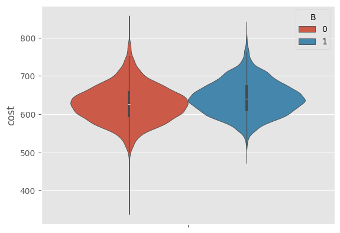
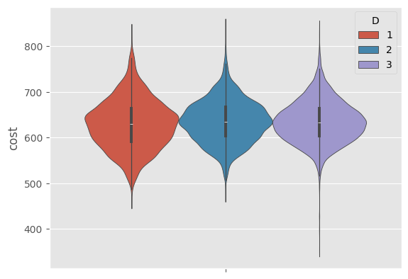
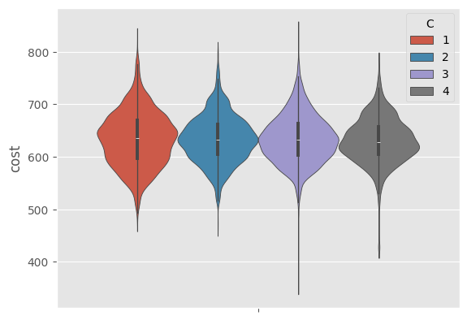
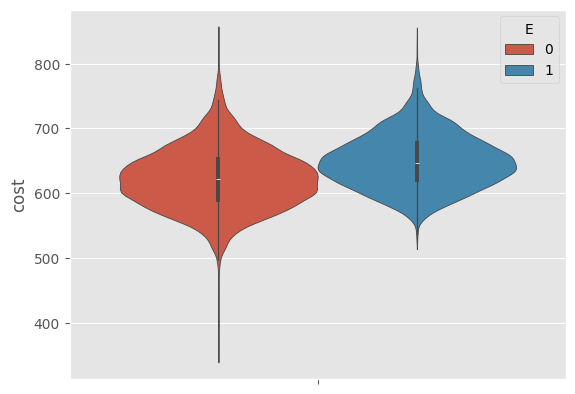
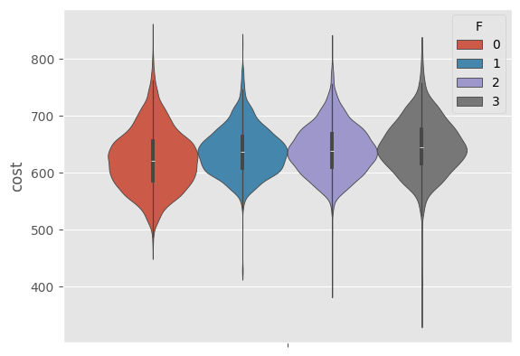
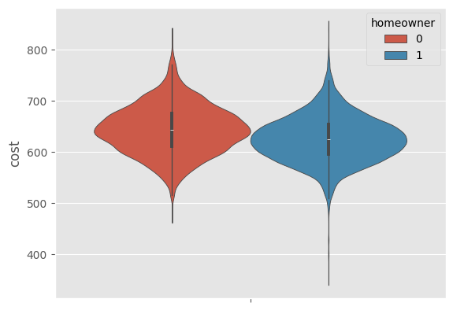
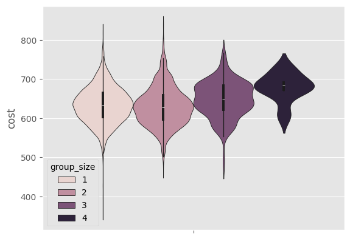
ipywidgets.interact(violingraphs, var=set_variable)
<function __main__.violingraphs(var)>
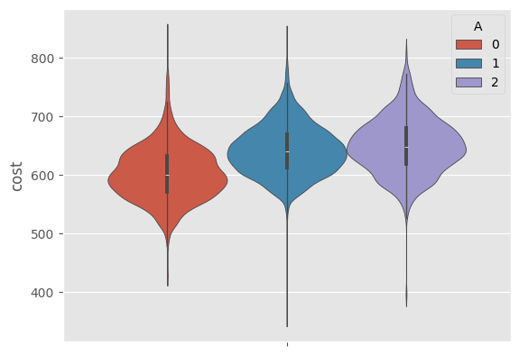
Variable |
¿Incluir en el modelo? |
Justificación |
|---|---|---|
|
✅ Sí |
Asociado a economía de escala y menor variabilidad en el costo |
|
✅ Sí |
Proxy de estabilidad financiera o menor riesgo |
|
✅ Sí |
Coberturas más altas se asocian con mayor costo |
|
✅ Sí |
Claramente incrementa el costo promedio de la póliza |
|
✅ Sí (con cautela) |
Patrón inverso al esperado; revisar interacciones (posible paradoja de Simpson) |
|
🟨 Tal vez |
Diferencias leves entre niveles, impacto limitado |
|
🟨 Tal vez |
Ligeramente más costoso, pero efecto marginal |
|
✅ Sí |
Relación clara y directa con el incremento del costo |
¿Cómo influye la antigüedad del vehículo (car_age) en el costo de la póliza (cost)? ¿Existe una relación lineal o no lineal entre ambas variables?
sns.scatterplot(data=Datos,x='car_age',y='cost')
<Axes: xlabel='car_age', ylabel='cost'>
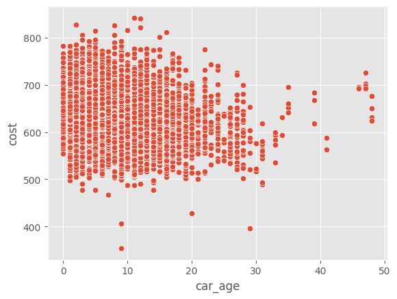
El gráfico sugiere una leve tendencia decreciente: a medida que el vehículo es más antiguo, el costo promedio tiende a disminuir. Sin embargo, la relación no parece estrictamente lineal, y se observa una mayor dispersión para autos más viejos, especialmente después de los 20 años. Esto podría indicar que la variable car_age tiene un efecto no lineal o que intervienen otros factores como el valor original del vehículo o el tipo de cobertura elegida.
D1=Datos[['car_age','cost']].groupby(['car_age']).mean().reset_index()
sns.scatterplot(data=D1,x='car_age',y='cost')
<Axes: xlabel='car_age', ylabel='cost'>
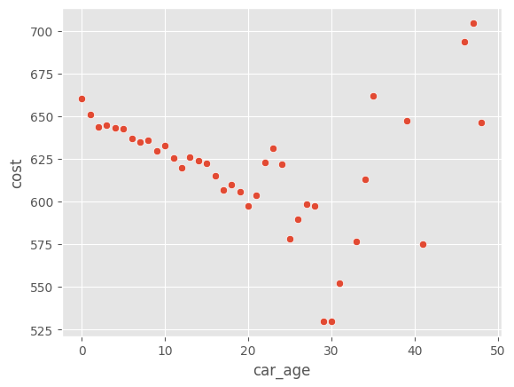
Al promediar el costo por cada edad del vehículo, se observa una tendencia general decreciente: a mayor antigüedad del carro, menor es el costo promedio de la póliza. Sin embargo, a partir de los 30 años, esta relación deja de ser estable y aparecen valores atípicos con incrementos inesperados en el costo. Esto puede deberse a baja frecuencia de observaciones en esas edades extremas o a características particulares de vehículos muy antiguos (e.g., autos clásicos o de colección).
sns.scatterplot(data=Datos,x='car_age',y='cost',hue=Datos['C'].tolist())
sns.scatterplot(data=Datos,x='car_age',y='cost',hue=Datos['B'].tolist())
D3=Datos[['car_age','cost','B']].groupby(['car_age','B']).mean().reset_index()
sns.scatterplot(data=D3,x='car_age',y='cost',hue=D3['B'].tolist())
variables=['car_age','age_youngest','homeowner','A','B','C','D','E','F','G','group_size']
plt.figure(figsize=(18,10))
for i,var in enumerate(variables):
plt.subplot(4,3,i+1)
if var in ['A','B','C','D','E','F','G','homeowner','group_size']:
sns.violinplot(x=var,y='cost',data=Datos)
else:
sns.scatterplot(x=var,y='cost',data=Datos,color="#B3107F")
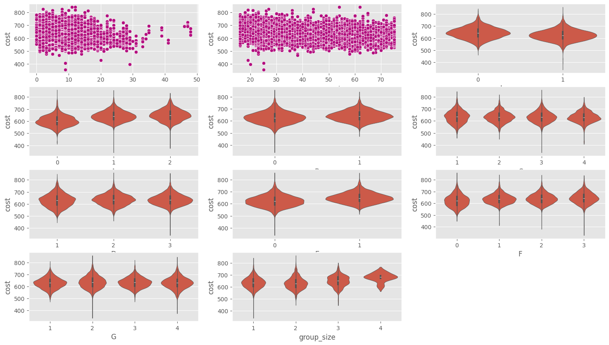
📌 Introducción a la modelación:#
Para preparar los datos de cara al ajuste de modelos predictivos, se realizó una transformación de las variables categóricas mediante codificación one-hot (dummies). En particular, se seleccionaron variables cualitativas relevantes como las coberturas (A a G), condiciones del cliente (homeowner, married_couple), características del grupo (group_size), historial (C_previous, risk_factor) y valor del vehículo (car_value). Utilizando pd.get_dummies con la opción drop_first=True, se evitó la colinealidad perfecta entre variables, facilitando la posterior interpretación de los coeficientes en modelos lineales y asegurando la compatibilidad con algoritmos que requieren variables numéricas. Este preprocesamiento permitió construir una matriz de diseño adecuada para el modelado supervisado del costo de la póliza.
Datos2 = Datos.copy()
variables2=['homeowner','A','B','C','D','E','F','G','group_size','car_value','C_previous','married_couple','risk_factor']
for var in variables2:
Datos2=pd.get_dummies(Datos2,columns=[var],prefix=var,prefix_sep='_',drop_first=True, dtype=int)
Datos2.head(10)
| state | car_age | age_oldest | age_youngest | duration_previous | cost | homeowner_1 | A_1 | A_2 | B_1 | ... | car_value_i | C_previous_1 | C_previous_2 | C_previous_3 | C_previous_4 | married_couple_1 | risk_factor_1 | risk_factor_2 | risk_factor_3 | risk_factor_4 | |
|---|---|---|---|---|---|---|---|---|---|---|---|---|---|---|---|---|---|---|---|---|---|
| 0 | OK | 9 | 24 | 24 | 9.0 | 543 | 0 | 0 | 0 | 0 | ... | 0 | 0 | 0 | 1 | 0 | 0 | 0 | 0 | 0 | 0 |
| 1 | OK | 9 | 24 | 24 | 9.0 | 611 | 0 | 0 | 1 | 1 | ... | 0 | 0 | 0 | 1 | 0 | 0 | 0 | 0 | 0 | 0 |
| 2 | PA | 7 | 74 | 74 | 15.0 | 691 | 1 | 0 | 1 | 0 | ... | 0 | 0 | 1 | 0 | 0 | 0 | 0 | 0 | 0 | 0 |
| 3 | PA | 7 | 74 | 74 | 15.0 | 695 | 1 | 0 | 1 | 0 | ... | 0 | 0 | 1 | 0 | 0 | 0 | 0 | 0 | 0 | 0 |
| 4 | AR | 4 | 26 | 26 | 1.0 | 628 | 0 | 1 | 0 | 0 | ... | 0 | 0 | 0 | 1 | 0 | 0 | 0 | 0 | 0 | 1 |
| 5 | AR | 4 | 26 | 26 | 1.0 | 625 | 0 | 1 | 0 | 0 | ... | 0 | 0 | 0 | 1 | 0 | 0 | 0 | 0 | 0 | 1 |
| 6 | AR | 4 | 26 | 26 | 1.0 | 628 | 0 | 1 | 0 | 0 | ... | 0 | 0 | 0 | 1 | 0 | 0 | 0 | 0 | 0 | 1 |
| 7 | OK | 13 | 22 | 22 | 0.0 | 596 | 0 | 0 | 0 | 0 | ... | 0 | 0 | 0 | 0 | 0 | 0 | 0 | 0 | 1 | 0 |
| 8 | OK | 13 | 22 | 22 | 0.0 | 711 | 0 | 0 | 1 | 0 | ... | 0 | 0 | 0 | 0 | 0 | 0 | 0 | 0 | 1 | 0 |
| 9 | OK | 13 | 22 | 22 | 0.0 | 722 | 0 | 0 | 1 | 0 | ... | 0 | 0 | 0 | 0 | 0 | 0 | 0 | 0 | 1 | 0 |
10 rows × 42 columns
X_train = Datos2.drop(columns = ['cost','state'])
y_train = Datos2['cost']
mlr = MultipleLinearRegression(method='ols')
mlr.fit(X_train, y_train)
mlr.summary()
Multiple Linear Regression Results
========================================
Method: OLS
Target Variable: cost
Feature Names:
1. car_age
2. age_oldest
3. age_youngest
4. duration_previous
5. homeowner_1
6. A_1
7. A_2
8. B_1
9. C_2
10. C_3
11. C_4
12. D_2
13. D_3
14. E_1
15. F_1
16. F_2
17. F_3
18. G_2
19. G_3
20. G_4
21. group_size_2
22. group_size_3
23. group_size_4
24. car_value_b
25. car_value_c
26. car_value_d
27. car_value_e
28. car_value_f
29. car_value_g
30. car_value_h
31. car_value_i
32. C_previous_1
33. C_previous_2
34. C_previous_3
35. C_previous_4
36. married_couple_1
37. risk_factor_1
38. risk_factor_2
39. risk_factor_3
40. risk_factor_4
Model Summary:
----------------------------------------
OLS Regression Results
==============================================================================
Dep. Variable: cost R-squared: 0.338
Model: OLS Adj. R-squared: 0.336
Method: Least Squares F-statistic: 197.2
Date: Thu, 05 Jun 2025 Prob (F-statistic): 0.00
Time: 20:04:27 Log-Likelihood: -78497.
No. Observations: 15483 AIC: 1.571e+05
Df Residuals: 15442 BIC: 1.574e+05
Df Model: 40
Covariance Type: nonrobust
=====================================================================================
coef std err t P>|t| [0.025 0.975]
-------------------------------------------------------------------------------------
const 681.6324 4.926 138.368 0.000 671.976 691.288
car_age -0.8856 0.065 -13.723 0.000 -1.012 -0.759
age_oldest 0.6874 0.062 11.042 0.000 0.565 0.809
age_youngest -0.9373 0.061 -15.358 0.000 -1.057 -0.818
duration_previous -1.1634 0.073 -16.046 0.000 -1.306 -1.021
homeowner_1 -14.4542 0.697 -20.743 0.000 -15.820 -13.088
A_1 48.1902 1.242 38.786 0.000 45.755 50.626
A_2 51.1959 1.540 33.240 0.000 48.177 54.215
B_1 0.6011 0.740 0.812 0.417 -0.849 2.051
C_2 -1.2747 1.121 -1.137 0.255 -3.471 0.922
C_3 -2.7092 1.132 -2.394 0.017 -4.927 -0.491
C_4 3.8686 1.787 2.164 0.030 0.365 7.372
D_2 2.3703 1.142 2.075 0.038 0.131 4.610
D_3 1.6441 1.175 1.399 0.162 -0.659 3.947
E_1 15.8025 0.811 19.493 0.000 14.213 17.391
F_1 -16.9450 1.109 -15.277 0.000 -19.119 -14.771
F_2 -18.1550 1.026 -17.697 0.000 -20.166 -16.144
F_3 -19.7330 1.924 -10.258 0.000 -23.504 -15.962
G_2 11.2231 0.861 13.031 0.000 9.535 12.911
G_3 8.8424 0.981 9.014 0.000 6.920 10.765
G_4 9.3970 1.158 8.117 0.000 7.128 11.666
group_size_2 -0.6026 1.513 -0.398 0.690 -3.568 2.363
group_size_3 5.3774 3.848 1.398 0.162 -2.164 12.919
group_size_4 23.8302 10.716 2.224 0.026 2.825 44.835
car_value_b -51.6345 7.655 -6.746 0.000 -66.638 -36.631
car_value_c -48.0043 4.844 -9.909 0.000 -57.500 -38.509
car_value_d -42.6877 4.628 -9.223 0.000 -51.759 -33.616
car_value_e -42.0481 4.604 -9.134 0.000 -51.072 -33.024
car_value_f -41.3066 4.619 -8.943 0.000 -50.360 -32.253
car_value_g -38.5412 4.657 -8.275 0.000 -47.670 -29.412
car_value_h -29.6918 4.850 -6.122 0.000 -39.198 -20.185
car_value_i -3.3966 6.129 -0.554 0.579 -15.410 8.617
C_previous_1 -3.2321 1.585 -2.039 0.042 -6.340 -0.125
C_previous_2 -13.2158 1.707 -7.742 0.000 -16.562 -9.870
C_previous_3 -15.2618 1.597 -9.554 0.000 -18.393 -12.131
C_previous_4 -23.8697 1.843 -12.950 0.000 -27.483 -20.257
married_couple_1 -5.7283 1.379 -4.154 0.000 -8.432 -3.025
risk_factor_1 -16.9991 1.099 -15.472 0.000 -19.153 -14.845
risk_factor_2 -7.6253 1.038 -7.346 0.000 -9.660 -5.591
risk_factor_3 -0.6258 0.923 -0.678 0.498 -2.436 1.184
risk_factor_4 -0.4824 0.938 -0.514 0.607 -2.322 1.357
==============================================================================
Omnibus: 576.011 Durbin-Watson: 0.754
Prob(Omnibus): 0.000 Jarque-Bera (JB): 1010.036
Skew: 0.312 Prob(JB): 4.72e-220
Kurtosis: 4.085 Cond. No. 3.07e+03
==============================================================================
Notes:
[1] Standard Errors assume that the covariance matrix of the errors is correctly specified.
[2] The condition number is large, 3.07e+03. This might indicate that there are
strong multicollinearity or other numerical problems.
results = mlr.model.fit()
summary_df = pd.DataFrame({
'feature': results.params.index,
'coef': results.params.values,
'std_err': results.bse.values,
't': results.tvalues.values,
'pval': results.pvalues.values,
'[0.025': results.conf_int()[0].values,
'0.975]': results.conf_int()[1].values
})
# DataFrame con coeficientes y p-valores (debes tenerlo cargado como 'df' previamente)
df_sig = summary_df[summary_df['pval'] < 0.05].sort_values(by='coef', key=abs, ascending=False)
df_sig = df_sig.query("feature != 'const'")
# Colores por signo
colors = df_sig['coef'].apply(lambda x: 'green' if x < 0 else 'red')
# Gráfico
plt.figure(figsize=(10, 12))
plt.barh(df_sig['feature'], df_sig['coef'], color=colors)
plt.axvline(0, color='gray', linestyle='--')
plt.title('Coeficientes Significativos en el Modelo de Regresión Lineal')
plt.xlabel('Coeficiente')
plt.ylabel('Variable')
plt.tight_layout()
plt.gca().invert_yaxis()
plt.show()
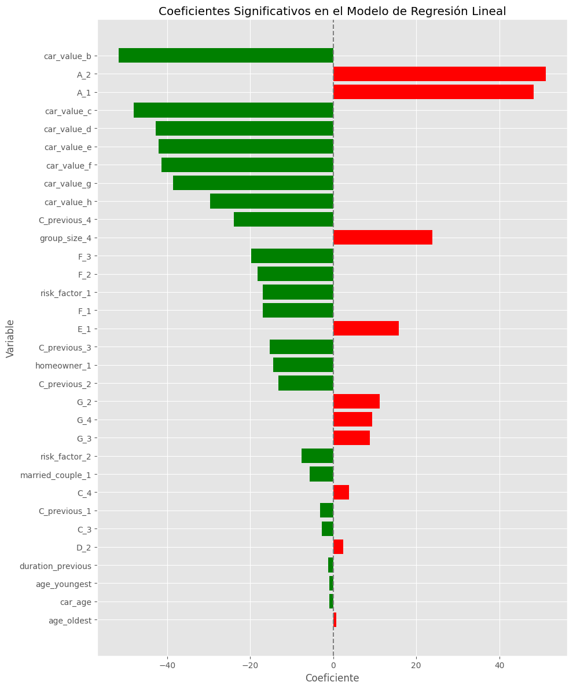
📌 Resumen del Modelo#
R² = 0.338: El modelo explica aproximadamente el 34% de la variabilidad en el costo de la póliza.
Significancia global (F-test p < 0.001): El conjunto de variables incluidas es estadísticamente significativo.
Número de observaciones: 15,483 pólizas analizadas.
🔍 Variables que AUMENTAN el Costo (coeficientes positivos y significativos)#
Variable |
Interpretación |
|---|---|
|
Mayor cobertura de colisión implica mayor costo. |
|
Incluir reembolso de alquiler eleva el costo. |
|
Cobertura médica mayor está asociada a costos más altos. |
|
Grupos grandes tienden a tener pólizas más costosas. |
|
A mayor edad del miembro más viejo del grupo, mayor costo. |
✅ Variables que REDUCEN el Costo (coeficientes negativos y significativos)#
Variable |
Interpretación |
|---|---|
|
Autos más antiguos suelen tener pólizas más baratas. |
|
Ser propietario de vivienda está asociado a menor costo. |
|
Cobertura exhaustiva en niveles altos reduce el costo, posiblemente por interacción con otras coberturas. |
|
Menor nivel de riesgo percibido implica menor costo. |
|
Vehículos de menor valor tienden a tener costos más bajos. |
|
Clientes con más años cubiertos previamente pagan menos. |
|
Haber tenido cobertura previa, especialmente más alta, reduce el costo actual. |
|
Grupos con pareja casada presentan menores costos promedio. |
⚠️ Variables con Efecto No Significativo (p > 0.05)#
B_1group_size_2group_size_3risk_factor_3risk_factor_4car_value_i
Estas variables podrían considerarse prescindibles en modelos simplificados, dado su bajo aporte explicativo.
🧠 Conclusión General#
El modelo identifica varias variables con efectos claros sobre el costo de la póliza. Entre los factores clave están:
Antigüedad del vehículo (
car_age)Tipo y nivel de cobertura (
A,E,F,G)Perfil del cliente (
risk_factor,homeowner,married_couple)Historial del cliente (
duration_previous,C_previous)Valor del vehículo (
car_value_*)
Aunque el R² sugiere margen de mejora, el modelo ya ofrece información útil para orientar estrategias de tarifación, segmentación de clientes y diseño de productos aseguradores.
X_train2 = Datos2[['A_1','A_2']]
mlr2 = MultipleLinearRegression(method='ols')
mlr2.fit(X_train2, y_train)
mlr2.summary()
Multiple Linear Regression Results
========================================
Method: OLS
Target Variable: cost
Feature Names:
1. A_1
2. A_2
Model Summary:
----------------------------------------
OLS Regression Results
==============================================================================
Dep. Variable: cost R-squared: 0.138
Model: OLS Adj. R-squared: 0.138
Method: Least Squares F-statistic: 1240.
Date: Thu, 05 Jun 2025 Prob (F-statistic): 0.00
Time: 20:44:37 Log-Likelihood: -80541.
No. Observations: 15483 AIC: 1.611e+05
Df Residuals: 15480 BIC: 1.611e+05
Df Model: 2
Covariance Type: nonrobust
==============================================================================
coef std err t P>|t| [0.025 0.975]
------------------------------------------------------------------------------
const 602.4374 0.730 825.409 0.000 601.007 603.868
A_1 39.9359 0.853 46.830 0.000 38.264 41.607
A_2 47.3826 1.239 38.250 0.000 44.954 49.811
==============================================================================
Omnibus: 408.745 Durbin-Watson: 0.719
Prob(Omnibus): 0.000 Jarque-Bera (JB): 575.603
Skew: 0.294 Prob(JB): 1.02e-125
Kurtosis: 3.739 Cond. No. 5.05
==============================================================================
Notes:
[1] Standard Errors assume that the covariance matrix of the errors is correctly specified.
X_train3 = Datos2[['car_age']]
mlr3 = MultipleLinearRegression(method='ols')
mlr3.fit(X_train3, y_train)
mlr3.summary()
Multiple Linear Regression Results
========================================
Method: OLS
Target Variable: cost
Feature Names:
1. car_age
Model Summary:
----------------------------------------
OLS Regression Results
==============================================================================
Dep. Variable: cost R-squared: 0.065
Model: OLS Adj. R-squared: 0.065
Method: Least Squares F-statistic: 1081.
Date: Thu, 05 Jun 2025 Prob (F-statistic): 3.59e-229
Time: 20:44:37 Log-Likelihood: -81169.
No. Observations: 15483 AIC: 1.623e+05
Df Residuals: 15481 BIC: 1.624e+05
Df Model: 1
Covariance Type: nonrobust
==============================================================================
coef std err t P>|t| [0.025 0.975]
------------------------------------------------------------------------------
const 650.9680 0.635 1024.999 0.000 649.723 652.213
car_age -2.1143 0.064 -32.874 0.000 -2.240 -1.988
==============================================================================
Omnibus: 245.604 Durbin-Watson: 0.812
Prob(Omnibus): 0.000 Jarque-Bera (JB): 321.571
Skew: 0.220 Prob(JB): 1.48e-70
Kurtosis: 3.553 Cond. No. 17.2
==============================================================================
Notes:
[1] Standard Errors assume that the covariance matrix of the errors is correctly specified.
mlr3.results.mse_resid
np.float64(2094.694619131332)
import statsmodels.api as sm
np.linalg.inv(sm.add_constant(X_train3).values.T @ sm.add_constant(X_train3).values)
array([[ 1.92553546e-04, -1.58966162e-05],
[-1.58966162e-05, 1.97475315e-06]])
np.sqrt(1.92553546e-04 * 2094.694619131332)
np.float64(0.6350912349425533)
Datos.groupby('A')['cost'].mean().reset_index()
C:\Users\legion\AppData\Local\Temp\ipykernel_28376\152501647.py:1: FutureWarning: The default of observed=False is deprecated and will be changed to True in a future version of pandas. Pass observed=False to retain current behavior or observed=True to adopt the future default and silence this warning.
Datos.groupby('A')['cost'].mean().reset_index()
| A | cost | |
|---|---|---|
| 0 | 0 | 602.437397 |
| 1 | 1 | 642.373250 |
| 2 | 2 | 649.820021 |
# Get model summary
mlr.summary()
Multiple Linear Regression Results
========================================
Method: OLS
Target Variable: cost
Feature Names:
1. car_age
2. age_oldest
3. age_youngest
4. duration_previous
5. homeowner_1
6. A_1
7. A_2
8. B_1
9. C_2
10. C_3
11. C_4
12. D_2
13. D_3
14. E_1
15. F_1
16. F_2
17. F_3
18. G_2
19. G_3
20. G_4
21. group_size_2
22. group_size_3
23. group_size_4
24. car_value_b
25. car_value_c
26. car_value_d
27. car_value_e
28. car_value_f
29. car_value_g
30. car_value_h
31. car_value_i
32. C_previous_1
33. C_previous_2
34. C_previous_3
35. C_previous_4
36. married_couple_1
37. risk_factor_1
38. risk_factor_2
39. risk_factor_3
40. risk_factor_4
Model Summary:
----------------------------------------
OLS Regression Results
==============================================================================
Dep. Variable: cost R-squared: 0.338
Model: OLS Adj. R-squared: 0.336
Method: Least Squares F-statistic: 197.2
Date: Thu, 05 Jun 2025 Prob (F-statistic): 0.00
Time: 20:44:37 Log-Likelihood: -78497.
No. Observations: 15483 AIC: 1.571e+05
Df Residuals: 15442 BIC: 1.574e+05
Df Model: 40
Covariance Type: nonrobust
=====================================================================================
coef std err t P>|t| [0.025 0.975]
-------------------------------------------------------------------------------------
const 681.6324 4.926 138.368 0.000 671.976 691.288
car_age -0.8856 0.065 -13.723 0.000 -1.012 -0.759
age_oldest 0.6874 0.062 11.042 0.000 0.565 0.809
age_youngest -0.9373 0.061 -15.358 0.000 -1.057 -0.818
duration_previous -1.1634 0.073 -16.046 0.000 -1.306 -1.021
homeowner_1 -14.4542 0.697 -20.743 0.000 -15.820 -13.088
A_1 48.1902 1.242 38.786 0.000 45.755 50.626
A_2 51.1959 1.540 33.240 0.000 48.177 54.215
B_1 0.6011 0.740 0.812 0.417 -0.849 2.051
C_2 -1.2747 1.121 -1.137 0.255 -3.471 0.922
C_3 -2.7092 1.132 -2.394 0.017 -4.927 -0.491
C_4 3.8686 1.787 2.164 0.030 0.365 7.372
D_2 2.3703 1.142 2.075 0.038 0.131 4.610
D_3 1.6441 1.175 1.399 0.162 -0.659 3.947
E_1 15.8025 0.811 19.493 0.000 14.213 17.391
F_1 -16.9450 1.109 -15.277 0.000 -19.119 -14.771
F_2 -18.1550 1.026 -17.697 0.000 -20.166 -16.144
F_3 -19.7330 1.924 -10.258 0.000 -23.504 -15.962
G_2 11.2231 0.861 13.031 0.000 9.535 12.911
G_3 8.8424 0.981 9.014 0.000 6.920 10.765
G_4 9.3970 1.158 8.117 0.000 7.128 11.666
group_size_2 -0.6026 1.513 -0.398 0.690 -3.568 2.363
group_size_3 5.3774 3.848 1.398 0.162 -2.164 12.919
group_size_4 23.8302 10.716 2.224 0.026 2.825 44.835
car_value_b -51.6345 7.655 -6.746 0.000 -66.638 -36.631
car_value_c -48.0043 4.844 -9.909 0.000 -57.500 -38.509
car_value_d -42.6877 4.628 -9.223 0.000 -51.759 -33.616
car_value_e -42.0481 4.604 -9.134 0.000 -51.072 -33.024
car_value_f -41.3066 4.619 -8.943 0.000 -50.360 -32.253
car_value_g -38.5412 4.657 -8.275 0.000 -47.670 -29.412
car_value_h -29.6918 4.850 -6.122 0.000 -39.198 -20.185
car_value_i -3.3966 6.129 -0.554 0.579 -15.410 8.617
C_previous_1 -3.2321 1.585 -2.039 0.042 -6.340 -0.125
C_previous_2 -13.2158 1.707 -7.742 0.000 -16.562 -9.870
C_previous_3 -15.2618 1.597 -9.554 0.000 -18.393 -12.131
C_previous_4 -23.8697 1.843 -12.950 0.000 -27.483 -20.257
married_couple_1 -5.7283 1.379 -4.154 0.000 -8.432 -3.025
risk_factor_1 -16.9991 1.099 -15.472 0.000 -19.153 -14.845
risk_factor_2 -7.6253 1.038 -7.346 0.000 -9.660 -5.591
risk_factor_3 -0.6258 0.923 -0.678 0.498 -2.436 1.184
risk_factor_4 -0.4824 0.938 -0.514 0.607 -2.322 1.357
==============================================================================
Omnibus: 576.011 Durbin-Watson: 0.754
Prob(Omnibus): 0.000 Jarque-Bera (JB): 1010.036
Skew: 0.312 Prob(JB): 4.72e-220
Kurtosis: 4.085 Cond. No. 3.07e+03
==============================================================================
Notes:
[1] Standard Errors assume that the covariance matrix of the errors is correctly specified.
[2] The condition number is large, 3.07e+03. This might indicate that there are
strong multicollinearity or other numerical problems.
# Validate assumptions
diagnostics = mlr.validate_assumptions(X_train, y_train, plot=True,
plots=['residuals', 'qq', 'leverage', 'cooks'])
Sampling 5000 records from 15483 for faster computation...
Running statistical tests...
- Computing Breusch-Pagan test...
- Computing Durbin-Watson test...
- Computing Shapiro-Wilk test...
Generating diagnostic plots...
Downsampling from 5000 to 1000 points for plotting...
Generating residuals plot...
Generating Q-Q plot...
Generating leverage plot...
Generating Cook's distance plot...
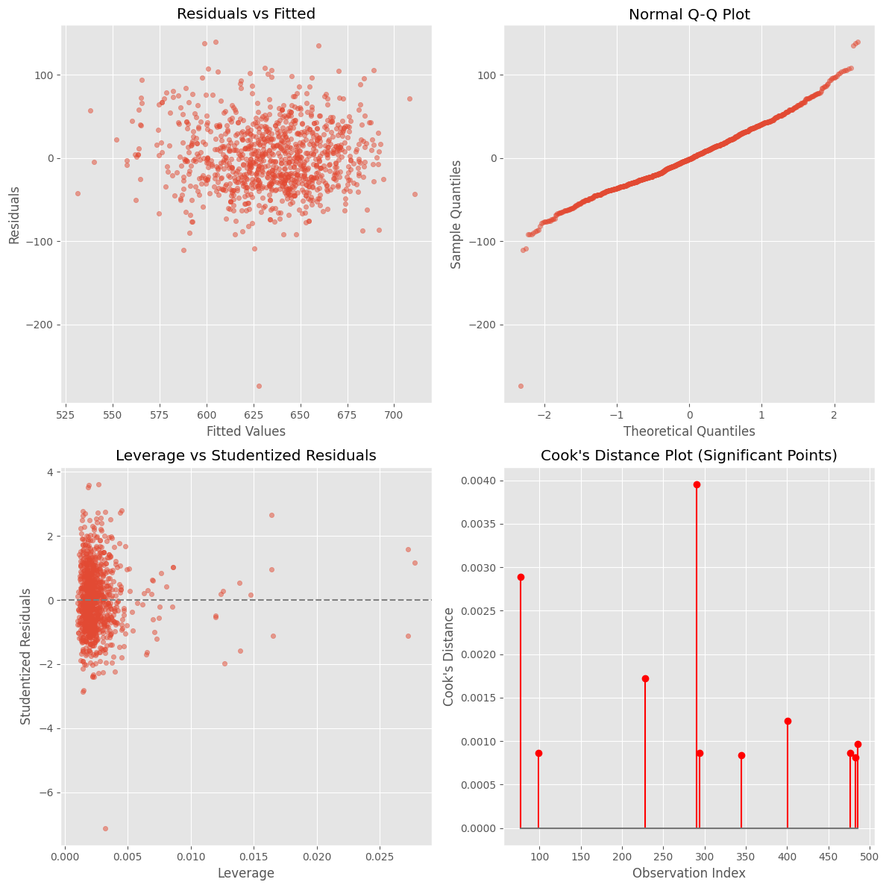
diagnostics.__dict__
{'breusch_pagan_stat': 228.90924379320776,
'breusch_pagan_pvalue': 2.5112013312147094e-28,
'durbin_watson_stat': 2.013632257511746,
'durbin_watson_pvalue': 0.0440481571055249,
'shapiro_stat': 0.9870181106209632,
'shapiro_pvalue': 4.734318400205819e-21}